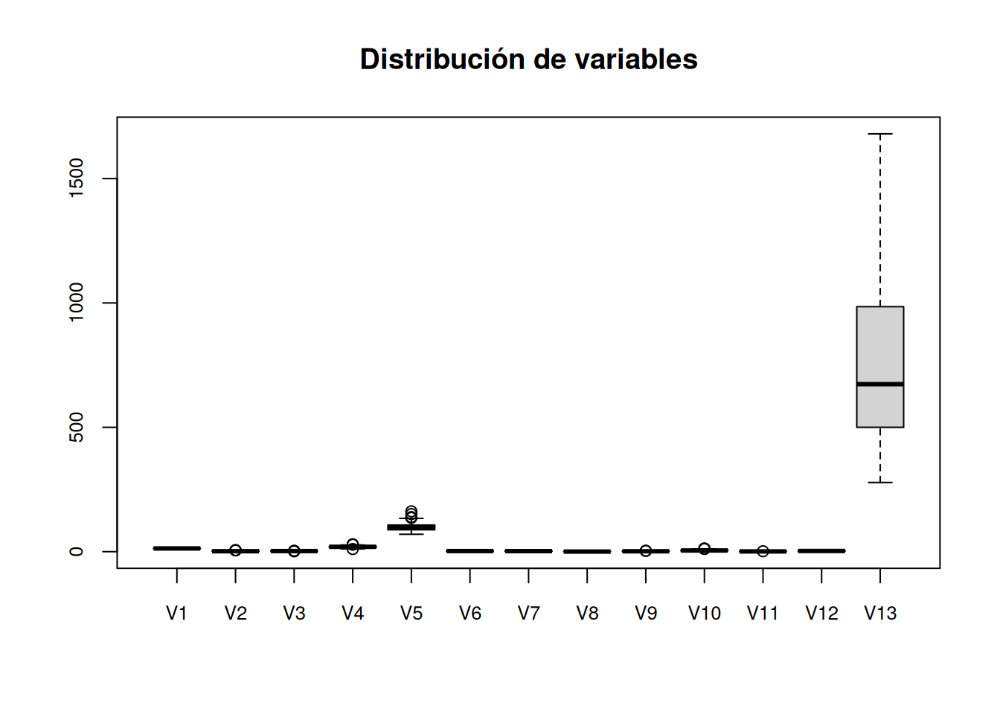
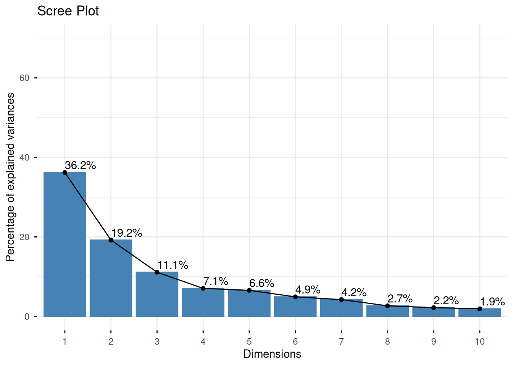

library(tidyverse)
library(factoextra)
library(patchwork)
library(corrplot)
library(HDclassif)Práctica 4
Análisis de Componentes Principales (PCA)
A lo largo de esta práctica se trabajará con el dataset wine, que se encuentra en el paquete HDclassif:
Versión Rápida
Ejercicio 4
Cargamos el dataset y mostremos sus 5 primeras filas:
data(wine)
wine_data <- wine[, -1]
print(head(wine_data, n = 5)) V1 V2 V3 V4 V5 V6 V7 V8 V9 V10 V11 V12 V13
1 14.23 1.71 2.43 15.6 127 2.80 3.06 0.28 2.29 5.64 1.04 3.92 1065
2 13.20 1.78 2.14 11.2 100 2.65 2.76 0.26 1.28 4.38 1.05 3.40 1050
3 13.16 2.36 2.67 18.6 101 2.80 3.24 0.30 2.81 5.68 1.03 3.17 1185
4 14.37 1.95 2.50 16.8 113 3.85 3.49 0.24 2.18 7.80 0.86 3.45 1480
5 13.24 2.59 2.87 21.0 118 2.80 2.69 0.39 1.82 4.32 1.04 2.93 735La función summary() nos permite calcular una serie de estadísticas de forma sencilla:
summary(wine_data) V1 V2 V3 V4
Min. :11.03 Min. :0.740 Min. :1.360 Min. :10.60
1st Qu.:12.36 1st Qu.:1.603 1st Qu.:2.210 1st Qu.:17.20
Median :13.05 Median :1.865 Median :2.360 Median :19.50
Mean :13.00 Mean :2.336 Mean :2.367 Mean :19.49
3rd Qu.:13.68 3rd Qu.:3.083 3rd Qu.:2.558 3rd Qu.:21.50
Max. :14.83 Max. :5.800 Max. :3.230 Max. :30.00
V5 V6 V7 V8
Min. : 70.00 Min. :0.980 Min. :0.340 Min. :0.1300
1st Qu.: 88.00 1st Qu.:1.742 1st Qu.:1.205 1st Qu.:0.2700
Median : 98.00 Median :2.355 Median :2.135 Median :0.3400
Mean : 99.74 Mean :2.295 Mean :2.029 Mean :0.3619
3rd Qu.:107.00 3rd Qu.:2.800 3rd Qu.:2.875 3rd Qu.:0.4375
Max. :162.00 Max. :3.880 Max. :5.080 Max. :0.6600
V9 V10 V11 V12
Min. :0.410 Min. : 1.280 Min. :0.4800 Min. :1.270
1st Qu.:1.250 1st Qu.: 3.220 1st Qu.:0.7825 1st Qu.:1.938
Median :1.555 Median : 4.690 Median :0.9650 Median :2.780
Mean :1.591 Mean : 5.058 Mean :0.9574 Mean :2.612
3rd Qu.:1.950 3rd Qu.: 6.200 3rd Qu.:1.1200 3rd Qu.:3.170
Max. :3.580 Max. :13.000 Max. :1.7100 Max. :4.000
V13
Min. : 278.0
1st Qu.: 500.5
Median : 673.5
Mean : 746.9
3rd Qu.: 985.0
Max. :1680.0 boxplot(wine_data,
main = "Distribución de variables",
cex.axis = 0.8)
Es fácil observar que V13 (Proline) presenta una escala absurdamente desproporcionada al resto de variables, por lo que para que PCA funcione correctamente es obligatorio estandarizar.
Ejercicio 5
Ahora realizamos el PCA sobre los datos estandarizados:
pca_wine <- prcomp(wine_data, scale = TRUE)Para ver cuánta varianza explican las dos primeras componentes podemos acceder al elemento pca_wine$sdev, ya que pca_wine$sdev^2 representa la varianza explicada por cada componente:
pca_wine$sdev^2 [1] 4.7058503 2.4969737 1.4460720 0.9189739 0.8532282 0.6416570 0.5510283
[8] 0.3484974 0.2888799 0.2509025 0.2257886 0.1687702 0.1033779Para entenderlo mejor podemos obtener la proporción de varianza explicada:
prop_varianza <- pca_wine$sdev^2 / sum(pca_wine$sdev^2)
prop_varianza [1] 0.361988481 0.192074903 0.111236305 0.070690302 0.065632937 0.049358233
[7] 0.042386793 0.026807489 0.022221534 0.019300191 0.017368357 0.012982326
[13] 0.007952149# sum(prop_varianza) == 1Se puede ver que las 2 primeras componentes explicarían un porcentaje del 55%:
prop_varianza[1] + prop_varianza[2][1] 0.5540634Dibujemos ahora el Scree Plot:
fviz_eig(pca_wine, addlabels = TRUE, ylim = c(0, 70), title = "Scree Plot")
Para retener al menos el 80% de la información original deberíamos
Ejercicio 6
La matriz rotation es la siguiente:
pca_wine$rotation PC1 PC2 PC3 PC4 PC5 PC6
V1 -0.144329395 -0.483651548 -0.20738262 -0.01785630 0.26566365 -0.21353865
V2 0.245187580 -0.224930935 0.08901289 0.53689028 -0.03521363 -0.53681385
V3 0.002051061 -0.316068814 0.62622390 -0.21417556 0.14302547 -0.15447466
V4 0.239320405 0.010590502 0.61208035 0.06085941 -0.06610294 0.10082451
V5 -0.141992042 -0.299634003 0.13075693 -0.35179658 -0.72704851 -0.03814394
V6 -0.394660845 -0.065039512 0.14617896 0.19806835 0.14931841 0.08412230
V7 -0.422934297 0.003359812 0.15068190 0.15229479 0.10902584 0.01892002
V8 0.298533103 -0.028779488 0.17036816 -0.20330102 0.50070298 0.25859401
V9 -0.313429488 -0.039301722 0.14945431 0.39905653 -0.13685982 0.53379539
V10 0.088616705 -0.529995672 -0.13730621 0.06592568 0.07643678 0.41864414
V11 -0.296714564 0.279235148 0.08522192 -0.42777141 0.17361452 -0.10598274
V12 -0.376167411 0.164496193 0.16600459 0.18412074 0.10116099 -0.26585107
V13 -0.286752227 -0.364902832 -0.12674592 -0.23207086 0.15786880 -0.11972557
PC7 PC8 PC9 PC10 PC11 PC12
V1 -0.05639636 -0.39613926 -0.50861912 -0.21160473 0.22591696 0.26628645
V2 0.42052391 -0.06582674 0.07528304 0.30907994 -0.07648554 -0.12169604
V3 -0.14917061 0.17026002 0.30769445 0.02712539 0.49869142 0.04962237
V4 -0.28696914 -0.42797018 -0.20044931 -0.05279942 -0.47931378 0.05574287
V5 0.32288330 0.15636143 -0.27140257 -0.06787022 -0.07128891 -0.06222011
V6 -0.02792498 0.40593409 -0.28603452 0.32013135 -0.30434119 0.30388245
V7 -0.06068521 0.18724536 -0.04957849 0.16315051 0.02569409 0.04289883
V8 0.59544729 0.23328465 -0.19550132 -0.21553507 -0.11689586 -0.04235219
V9 0.37213935 -0.36822675 0.20914487 -0.13418390 0.23736257 0.09555303
V10 -0.22771214 0.03379692 -0.05621752 0.29077518 -0.03183880 -0.60422163
V11 0.23207564 -0.43662362 -0.08582839 0.52239889 0.04821201 -0.25921400
V12 -0.04476370 0.07810789 -0.13722690 -0.52370587 -0.04642330 -0.60095872
V13 0.07680450 -0.12002267 0.57578611 -0.16211600 -0.53926983 0.07940162
PC13
V1 -0.01496997
V2 -0.02596375
V3 0.14121803
V4 -0.09168285
V5 -0.05677422
V6 0.46390791
V7 -0.83225706
V8 -0.11403985
V9 0.11691707
V10 0.01199280
V11 0.08988884
V12 0.15671813
V13 -0.01444734Podemos encontrar las 3 variables que más contribuyen a la PC1:
sort(abs(pca_wine$rotation[, 1]), decreasing = TRUE)[1:3] V7 V6 V12
0.4229343 0.3946608 0.3761674 En este caso son V7, V6 y V12 (en ese orden).
Esto nos dice que, la primera componente del análisis intenta medir mayoritariamente la cantidad de dichas variables:
- V7 (Flavanoids)
- V6 (Total phenols)
- V12 (OD280/OD315 of diluted wines)